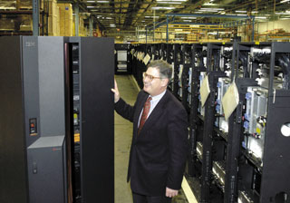

Олег Спиряев
Пожалуй, простого анализа статистических данных о рынке ОС достаточно, чтобы убедиться, что движение в сторону Linux - это реальность сегодняшнего дня. При таком развитии событий компании, чьи основные продукты непосредственно конкурируют с открытыми программными средствами на рынке массовых компьютерных систем, имеют все основания для беспокойства. Особенность положения корпорации IBM (http://www.ibm.com) как поставщика компьютерных систем с широким перечнем предложений в сфере аппаратных средств, ОС и промежуточного ПО позволяет ей довольно гибко реагировать на запросы рынка. И компания восприняла ОС Linux с энтузиазмом, превзошедшим ожидания многих аналитиков отрасли, - хотя истинные приверженцы Linux могут считать это всего лишь закономерным и неизбежным признанием данной ОС.
Рыночные перспективы LinuxСогласно опубликованному в мае 2004 г. отчету IDC (http://www.idc.com), ОС Linux сегодня остается наиболее динамично развивающейся платформой. В I квартале 2004 г. объем продаж Linux-серверов вырос на 56,9%, приблизившись в денежном выражении к отметке в 1 млрд долл. В штучном выражении поставки Linux-серверов по сравнению с I кварталом 2003 г. увеличились на 46,4%. Стоит также отметить, что сегодня в мире существует свыше 3 тыс. свободно распространяемых пакетов с открытым кодом (они размещены на Web-узле http://www.gnu.org), среди которых - базы данных, ERP-системы, системы электронной коммерции, офисные пакеты, бухгалтерские системы, а также системы безопасности. По данным аналитиков, в 2003 г. общий мировой доход от продаж лицензий и поддержки всех ОС составил 21,6 млрд долл. Три четверти всех продаж ОС приходится на Северную Америку и Западную Европу. Компании сегодня относятся к затратам на ИТ с большей осторожностью, отдавая предпочтение недорогим ОС на базе широко распространенных аппаратных платформ; при этом наиболее быстро развиваются Windows и Linux. Доход от лицензий и поддержки ОС Linux в прошлом году достиг 117 млн долл.; основными дистрибутивами были Red Hat и SuSE Linux. Доля серверов под Linux составляла в тот период примерно четверть всех мировых поставок серверов. В России развитию рынка Linux-серверов способствуют такие факторы, как поддержка в государственном секторе, невысокая совокупная стоимость владения, быстрая реакция поставщиков ПО, а также возможность работы на Intel-платформах.
|
По оценке одного из топ-менеджеров IBM, буквально три года назад Linux исполнялась на очень немногих системах корпорации. Теперь она работает чуть ли не на каждой - почти все продукты, что есть у IBM, так или иначе совместимы с Linux. Сегодня можно назвать тысячи приложений, работающих под управлением Linux. В IBM полагают, что влияние ОС Linux на ИТ-отрасль будет сказываться во всем диапазоне компьютерных систем - начиная от малых устройств и заканчивая сверхмощными суперкомпьютерами.
Надо сказать, что слова руководителей этой корпорации не расходятся с делом. Так, если взять портативные системы, то в начале лета IBM и Intel (http://www.intel.com) представили результаты совместной работы над пилотной версией мобильной рабочей станции на платформе Linux, предназначенной для повышения продуктивности работы инженеров, занятых в одной из самых требовательных к вычислительным ресурсам отраслей - САПР в области электроники. Новая вычислительная платформа объединяет технологию Centrino для мобильных ПК, ноутбуки IBM ThinkPad и ПО компании Cadence Design Systems.
Исторически задачи автоматизированного проектирования электронных устройств выполнялись на настольных рабочих станциях, характеристики которых (тактовая частота процессоров и объем оперативной памяти) отвечали потребностям ресурсоемких приложений. Однако технологии и решения, появившиеся на рынке в последнее время, позволили мобильным рабочим станциям, созданным на базе ноутбуков IBM ThinkPad, заявить о себе как о жизнеспособном решении для САПР в области электроники. Благодаря им инженеры получили возможность работать и эффективно сотрудничать, находясь практически в любом месте вне офиса. Разработчики Intel уже используют пилотный вариант этого решения для проектирования и совершенствования своей продукции, а более широкое внедрение новинки запланировано на вторую половину текущего года.
Мобильные рабочие станции имеют огромный потенциал для преобразования вычислительных систем и в таких отраслях, как энергетика и нефтегазодобывающая промышленность, обеспечивая инженеров и геологов высокопроизводительными мобильными решениями.
Linux-кластеры
По сравнению с традиционными системами кластеры используются для решения сложных задач или повышения рентабельности решений. Как известно, кластер представляет собой параллельную или распределенную систему, состоящую из связанных друг с другом компьютеров, которые используются в качестве единого, унифицированного ресурса. Другими словами, кластер связывает несколько серверных системных узлов в единую мощную систему, способную одновременно поддерживать большое количество пользователей.
Для кластеров характерны следующие особенности:
- высокая готовность (High Availability) - избыточность и средства восстановления после сбоя, обеспечивающие высокую отказоустойчивость;
- высокая производительность (High Performance) - множество систем, работающих совместно для решения одной задачи (так называемая FLOP-ферма);
- консолидация серверов - централизованное управление ресурсами, выделяемыми для выполнения различных задач.
Первоначально усилия по созданию Linux-кластеров были сосредоточены в сфере высокопроизводительных вычислений (High Performance Computing, HPC), и системы на основе микропроцессоров семейства Itanium (с увеличенной производительностью вычислений с плавающей точкой) вносят свой вклад в эту область.
Один из наиболее результативных методов решения сложных научно-технических задач - это параллельные вычисления. Объединение мощностей множества процессоров позволяет эффективно справляться с задачами, требующими большого объема вычислений или интенсивных операций ввода-вывода, для которых одной системе с симметричной мультипроцессорной архитектурой (SMP) потребуется слишком много времени, вне зависимости от ее вычислительных возможностей. Помимо улучшения быстродействия и масштабируемости, кластеризация как метод реализации параллельных вычислений позволяет создавать решения с хорошим соотношением цена/производительность.
Однако, чтобы воспользоваться преимуществами кластеризации при решении, скажем, таких задач, как гидродинамические расчеты, расшифровка генетического кода, моделирование экологических систем или нефтяных месторождений, недостаточно просто объединить несколько сотен процессоров. Здесь требуется сбалансированная высокопроизводительная система с надежной памятью, устойчивыми средствами ввода-вывода и современными средствами повышения продуктивности работы пользователей. Кроме того, система должна быть достаточно проста в обслуживании.
Кластеризация серверных систем высокой готовности позволяет не терять связи с ключевыми приложениями, необходимыми для ведения бизнеса. В таком решении имеется множество функций, совместно обеспечивающих безостановочную работу систем. Если в кластере один из серверных узлов неожиданно отказывает или отключается для проведения модернизации или обслуживания, выполняемая им работа автоматически подхватывается исправным узлом или узлами при минимальном перерыве в работе. Данный процесс называется аварийным переключением (failover) и призван обеспечить пользователям максимально бесперебойный доступ к критичным деловым приложениям.
В настоящее время существуют решения высокой готовности для кластеров Linux от нескольких независимых поставщиков ПО, различающиеся по возможностям и сложности. Аналитики полагают, что в ближайшем будущем кластеры высокой готовности (HA clusters) получат еще большее распространение. Консолидация серверов призвана решить не столько техническую проблему, сколько проблему управления, и ее решение, без сомнения, станет важной задачей с широким распространением Linux-кластеров.
По мере того, как требования к вычислительным ресурсам растут, а финансовые ограничения ужесточаются, все большее число компаний приходят к выводу, что для решения проблем своего бизнеса они должны сделать очередной шаг в развитии ИТ-систем и перейти к разбиению серверов на разделы и объединению их в кластеры. Ресурсы кластера могут совместно использоваться десятками или сотнями различных корпоративных приложений, включая корпоративные хранилища данных, специализированные витрины данных, корпоративные порталы, системы электронной почты, Web-сервисы, ERP- и CRM-системы, системы управления цепочками поставок (SCM), системы финансового управления и управления персоналом. Используя механизм кластеризации, компании могут создавать ИТ-инфраструктуры, которыми легко и экономически эффективно управлять из единой точки.
Центр компетенции Linux в МосквеВ начале этого года Министерство РФ по связи и информатизации и корпорация IBM открыли в Москве Центр компетенции Linux, назначение которого - поддержка государственных и образовательных организаций, а также коммерческих компаний в вопросах эффективного использования преимуществ ИТ-инфраструктур на основе Linux. В задачи Центра компетенции входят стимулирование развития приложений и решений; поддержка, консультации, обучение технологиям Linux; продвижение Linux-продуктов; локализация и сертификация решений на этой платформе. Заказчики, бизнес-партнеры и разработчики могут теперь моделировать свои решения на разнообразных серверных системах IBM eServer, высокопроизводительных Linux-кластерах, системах хранения данных. В Центре доступен практически полный спектр ПО IBM на платформе Linux, включая продукты семейств WebSphere, DB2, Lotus, Tivoli и Rational. Сотрудники Центра могут предоставить консультации и услуги по интеграции информационных систем, они также имеют доступ к другим Центрам компетенции IBM в мире и необходимую экспертизу в области Linux. Российские власти проявляют интерес к Linuх по ряду причин. Во-первых, необходимо оптимизировать стоимость владения информационными системами. Следует оценить, насколько применение Linux позволит государственным органам перенести центр тяжести затрат с лицензионных отчислений на поддержку функционирования и совершенствования систем, и какова потенциальная экономия. Кроме того, программные решения, которые используются в государственных структурах, должны быть максимально открыты для анализа в целях обеспечения информационной безопасности. А с принятием концепции использования ИТ в российских органах власти должен существенно ускориться процесс консолидации ИТ-решений, ранее внедряемых в отдельных ведомствах. Все это ставит проблему прозрачности и совместимости программных систем, и помочь ее решить может как раз платформа Linux. Системные администраторы в органах государственной власти смогут с помощью Центра компетенции Linux повышать свой профессионализм в этой сфере, делать более обоснованный выбор операционной платформы, и в результате наши информационные системы будут работать эффективнее. |
Кластеры на платформе Intel
IBM уделяет пристальное внимание развитию ОС Linux и приложений к ней на платформе Intel-серверов IBM eServer xSeries. Совместно с Open Source Community создаются драйверы устройств, документация, издано множество руководств по установке, настройке и администрированию Linux-систем на базе серверов xSeries. Кластеры Linux на процессорах Intel весьма популярны в учебных заведениях и представляют собой недорогую платформу для разработок в сфере параллельного программирования и инструментальных средств, управления распределенными системами. В то же время кластеры Intel/Linux стали все чаще появляться в правительственных и исследовательских организациях.
Вообще говоря, интерес IBM к кластерам Linux на платформе Intel объясняется довольно просто. Как это было с параллельными RISC-системами на рынке HPC, кластеры Linux выходят на массовый рынок, покидая категорию экспериментальных. По мере роста распространенности кластерных систем Linux должны расти и возможности деловой деятельности. И заказчики корпорации проявляют интерес к таким кластерам (о причинах этого мы говорили выше).
Еще в начале 2000 г. IBM создала кластерные системы Linux на базе систем IBM eServer xSeries в стоечном исполнении (или более ранних систем IBM Netfinity), интегрируя их с соответствующими сетями, уровнем системного управления (аппаратное и программное обеспечение) и необходимыми сервисами.
Вообще говоря, дизайн Linux-кластера - далеко не тривиальная задача. При этом необходимо рассматривать несколько уровней абстракции, а уровень сложности нарастает с увеличением размеров кластера, и в некоторых случаях это довольно непростая зависимость. Практика показывает, что простое соединение необходимых частей системы почти никогда не бывает успешным. Так что решения в сфере кластеров Linux должны генерироваться теми, у кого есть необходимое понимание проблем.
Конечно, существует ряд фундаментальных принципов построения таких систем и наилучших методов их практической реализации. Так, рассчитать количество узлов, требуемых для решения поставленной задачи или выполнения необходимых объемов работ, достаточно просто, но при этом нужно учитывать, что с учетом инфраструктуры потребуется большее число узлов.
Основой Linux-кластера служат системы Intel-архитектуры, установленные в стандартную 19-дюйм стойку (42 U) высокой плотности размещения. В пределах стойки располагаются узлы, быстрые межсоединения, например, коммутаторы, оборудование сетевого управления, терминальные серверы и т. п. Узлы функционально могут быть поделены на две категории: это вычислительные узлы, выполняющие основную задачу, и узлы инфраструктуры (головные узлы, узлы управления и узлы хранения данных), обеспечивающие управление системой и специализированные функции, необходимые для соединения вычислительных узлов в единую систему.
Аппаратное обеспечение машин семейства xSeries имеет особенности, делающие отказ индивидуальных узлов менее вероятным и позволяющие выполнять опережающее техническое обслуживание узлов или частей, в которых может произойти отказ. Заложенная во многих функциях опора на аппаратную избыточность позволяет системе сохранять устойчивость к целому ряду типов отказов. Тем самым обеспечивается концепция RAS (Reliability, Availability, Serviceability) - надежность, готовность и удобство обслуживания.
Коммутаторы и другие структурные элементы служат для обеспечения коммуникаций между процессорами, параллельного программирования и различных функций управления. Для параллельного программирования (организации межпроцессного взаимодействия - Inter Process Communication) широко используется коммутатор Myrinet-2000 компании Myricom (http://www.myri.com). Myrinet-2000 - это очень быстрое и хорошо масштабируемое широкополосное устройство. Считается, что при увеличении числа подключенных узлов общая ширина полосы пропускания, как у всех коммутаторов с настоящей масштабируемостью, растет пропорционально, а латентность остается постоянной. Иными словами, полоса на каждом из путей одинакова, а число путей (направлений) зависит от количества узлов, при этом каждый узел имеет связь со всеми остальными узлами независимо от размера кластера. Например, ширина полосы в расчете на направление может составлять 200 Mбайт/с в каждом направлении с латентностью в 6-8 мкс. Коммуникации между пользовательскими пространствами могут реализовываться на основе протоколов IP или GM при помощи ПО пользовательского уровня Myricom.
Семейство платформ с архитектурой Intel продолжил кластер IBM eServer Cluster 1350. Он поддерживает до 512 вычислительных узлов и до 32 узлов хранения данных. Каждый кластер требует одного двухпроцессорного узла управления. Процессорную мощность кластера формируют серверы IBM eServer x335 и x345 на процессорах Intel Xeon с тактовыми частотами 2,67; 2,8; 3,06 ГГц и емкостью кэш-памяти второго уровня до 1 Мбайт.
IBM eServer x345, используемые в кластере IBM eServer Cluster 1350 в качестве центральных узлов управления и хранения данных, представляют собой серверы высотой 2U. Накопители размещаются в шести монтажных отсеках с возможностью горячей замены.
В качестве узлов для кластера используются IBM eServer x335, тонкие серверы высотой 1U в двухпроцессорной конфигурации (Intel Xeon). Они поддерживают до 8 Гбайт оперативной памяти и до 293 Гбайт дисковой памяти. В случае серверов eServer x345 последний показатель увеличивается до 880 Гбайт. В качестве узлов кластера могут также использоваться 4-процессорные серверы IBM eServer x360, которые благодаря технологии Enterprise X-Architecture имеют высокую масштабируемость каналов ввода-вывода.
Увеличение объема дискового пространства также достигается подключением серверов хранения IBM FASt 600, FASt 700, FASt 900 и соответствующих устройств расширения.
Различные конфигурации кластеров используют стандартные 19-дюйм стойки IBM. Для организации межпроцессорного взаимодействия предлагаются коммутаторы Gigabit Ethernet и Myrinet-2000.
В качестве базового ПО для кластера Linux выступает ОС Linux. Кластеры на платформе Intel поддерживают дистрибутивы Red Hat и SuSE, однако могут использоваться и другие стандартные дистрибутивы по заказной спецификации. ОС Linux устанавливается на каждый узел кластера, при этом для больших кластеров имеется ПО системного управления, позволяющее каскадировать установку по сетям управления.
Высокопроизводительная файловая система с коллективным доступом к дискам GPFS (General Parallel File System) обеспечивает быстрый доступ ко всем узлам кластера. Она обладает высокой производительностью за счет "распределения" ввода-вывода на множество дисков (или множество серверов); высокой готовностью за счет регистрации выполняемых действий, репликации и быстрого восстановления серверов и дисков после сбоев; а также высокой степенью масштабируемости.
Программный продукт IBM под названием Cluster System Management for Linux (CSM) обеспечивает функции системного управления подобно тому, как это делается на уровне управления системы IBM RS/6000 SP (PSSP). CSM - стандартное ПО системного управления для кластерных систем. В частности, в CSM для Linux используется технология, созданная на основе программ поддержки параллельных систем для AIX (IBM Parallel System Support Programs). Это предложение, эквивалентное PSSP и кластерам AIX, предназначается для заказчиков, которым требуется надежная система управления кластером на основе открытого Intel-сервера.
Linux-кластеры на платформе Power
Кластерные решения IBM eServer Cluster 1600 используют и расширяют возможности одного из самых удачных суперкомпьютеров корпорации - RS/6000 SP. Многие из кластерных систем IBM построены на основе серверов семейства eServer pSeries, в частности, SMP-серверов pSeries 630, 650, 655, 670 и 690 на базе микропроцессоров IBM Power4+. Перечисленные серверы pSeries поддерживают разбиение на логические разделы (LPAR), что обеспечивает еще большую гибкость в распределении вычислительных ресурсов между приложениями. Новые серверы pSeries могут быть добавлены к уже существующим кластерам, что обеспечивает отличную защиту инвестиций.
Суперкомпьютеры IBM в Top500Согласно результатам независимого исследования Top500 (http://www.top500.org), ведущим мировым поставщиком суперкомпьютерных систем была признана корпорация IBM (http://www.ibm.com), ставшая лидером как по числу позиций в списке самых мощных суперкомпьютеров в мире (224 системы), так и по суммарной вычислительной мощности этих систем - 407 TFLOPS (триллионов операций с плавающей запятой в секунду). Таким образом, IBM обеспечивает 50% общей вычислительной мощности суперкомпьютеров из списка Top500. Стоит также отметить, что в популярном рейтинге сильнейших суперкомпьютеров мира кластеры под управлением открытой ОС занимают 280 различных позиций, причем большая часть систем принадлежит именно IBM - 150 систем.
|
В системах eServer Cluster 1600 в параллельном режиме используются тесно связанные, устойчивые к нагрузкам серверы с разделяемой памятью, что позволяет масштабировать вычислительные мощности при высокопроизводительных вычислениях. Так, в конфигурацию кластера может входить до 32 серверов pSeries 690/670 и до 64 серверов p655, p650 и p630 либо их произвольная комбинация с общим числом серверов не более 128. Управление всеми серверами кластера осуществляется с одной управляющей рабочей станции. Возможности масштабирования могут быть расширены по специальному заказу.
|  | Основа кластера eServer Cluster 1600.
|
В серверах pSeries690 используются последние достижения IBM в области микропроцессорных технологий, в том числе процессор Power4+. Этот процессор, предназначенный для мощных Unix-серверов, представляет собой первую SMP-систему, выполненную на одной микросхеме (SMP-on-a-chip). Каждая микросхема содержит два процессора с тактовой частотой 1,5 или 1,7 ГГц и общую кэш-память; общее число процессоров в одном сервере достигает 32. Принципы, отработанные на мэйнфреймах IBM, позволили реализовать в серверах pSeries 690 истинное динамическое разбиение на логические разделы. Один сервер может быть разделен на несколько (до 32) "виртуальных" серверов, каждый из которых располагает собственным набором системных ресурсов, включая процессоры, память и средства ввода-вывода. Каждый логический раздел управляется как отдельный узел Cluster 1600.
В серверах высшего класса pSeries 670 используются процессоры Power4+ с тактовой частотой 1,5 ГГц, при этом в одном сервере может быть установлено до 16 процессоров. Эти серверы, как и pSeries 690, поддерживают разбиение на логические разделы, максимальное число которых равно 16.
Сервер pSeries 655 представляет собой кластерный блок с очень высокой плотностью монтажа, способный удовлетворить растущие вычислительные потребности задач математического моделирования без увеличения площади, занимаемой аппаратными средствами. В одной системной стойке можно установить до 16 серверов pSeries 655 с общим числом процессоров до 128; при необходимости создания больших кластеров можно объединять несколько стоек. В каждом сервере pSeries 655 может быть четыре процессора Power4+ с тактовой частотой 1,7 ГГц или восемь таких процессоров с тактовой частотой 1,5 ГГц и до четырех динамических логических разделов LPAR.
Сервер начального уровня pSeries 630 Model 6C4, предназначенный для установки в 19-дюйм стойку, поддерживает до четырех процессоров Power4+ с тактовой частотой 1,2 или 1,45 ГГц и отличается минимальной ценой среди четырехпроцессорных конструктивных блоков семейства pSeries для построения решений Cluster 1600. Сервер имеет высокую производительность при хорошем соотношении цена/производительность и минимальную установочную площадь.
Обмен информацией между серверами и узлами Cluster 1600 может быть организован с помощью стандартных соединений 100/100 Мбит/с или Gigabit Ethernet. Для поддержки приложений, обменивающихся с серверами большими объемами данных, например, для медицинской визуализации, можно использовать высокопроизводительный коммутатор IBM SP Switch2, обеспечивающий обмен данными со скоростью до 500 Мбайт/с при передаче в одном направлении. При необходимости дальнейшего повышения пропускной способности в серверах p690, p670 и p655 предусмотрена поддержка двух матриц на базе коммутаторов SP Switch2. В этом случае в каждом сервере или логическом разделе можно использовать до двух адаптеров для подключения к коммутаторам SP Switch2. Коммутаторы SP Switch2 устанавливаются в стандартные стойки 19 или 24 дюйма.
Для тех заказчиков, которые хотят добавить новые серверы к существующим кластерам без модернизации коммутационной соединительной сети, по-прежнему доступны более старые коммутаторы SP Switch с пропускной способностью до 150 Мбит/с при передаче в одном направлении.
Используемые в решении Cluster 1600 технологии применяются в самых мощных суперкомпьютерах. Эти системы имеют отличные показатели производительности и масштабируемости, что уже не раз демонстрировалось на примерах решения ресурсоемких прикладных задач, требующих интенсивного распараллеливания вычислений, таких, как моделирование глобальных климатических процессов, инженерное проектирование, добыча и переработка нефти, финансовое моделирование или разработка новых медицинских препаратов.
Кроме того, за счет гибкой архитектуры Cluster 1600 можно использовать существующее оборудование совместно с новейшими технологиями, обеспечивая планируемое, эволюционное развитие на будущее. Заказчики могут начать с развертывания небольшого кластера, состоящего из нескольких (от 2 до 4) серверов приложений pSeries 630 и одного сервера pSeries 670 для баз данных. По мере роста вычислительных потребностей к ним будут добавляться дополнительные серверы pSeries 655. Кроме того, можно добавлять более мощные серверы, не заменяя существующие аппаратные средства, что обеспечивает защиту инвестиций.
Модульная, гибкая и масштабируемая архитектура системы Cluster 1600 в сочетании с мощными серверами на базе процессоров Power4+ идеально подходит для решения наиболее сложных научных и технических расчетных задач.
Безопасность для систем IBM eServerВ начале этого года IBM и отделение Novell SuSE Linux объявили о достижении более высокого уровня сертификации безопасности для SuSE, что будет способствовать широкому использованию Linux правительственными организациями и министерствами обороны для критически важного оперативного управления. Система SuSE Linux Enterprise Server 8 с Service Pack 3 на IBM eServer выполнила требования уровня Controlled Access Protection Profile стандарта The Common Criteria for Information Security Evaluation (сокращенно CAPP/EAL3+). Сертификация Linux на соответствие CAPP/EAL3+ еще больше расширяет функциональные возможности Linux и укрепляет уверенность в ее безопасности по сравнению с EAL2+. Этого удалось достичь благодаря тому, что в SuSE Linux Enterprise Server 8 была добавлена подсистема аудита, обеспечивающая контроль за важными с точки зрения безопасности событиями. Кроме того, для сертификации CAPP/EAL3+ потребовались всестороннее тестирование и проверка. Это означает, что SuSE Linux стала первым дистрибутивом Linux, соответствующим как стандарту Common Criteria, так и COE, что позволяет исполнять приложения оперативного управления в защищенной среде. COE, спецификация Министерства обороны США, выдвигает специальные требования к функциональности и возможностям взаимодействия коммерческих ИТ-продуктов, приобретаемых для систем оперативного управления. Стремление IBM ускорить разработку и аттестацию Linux в качестве безопасной операционной системы индустриального класса подтверждается и совместным планом IBM/SuSE, согласно которому в этом году предполагается достичь еще более высокого уровня сертификации SuSE Linux - CAPP/EAL4+ для всех линеек продуктов IBM eServer. |
***
Итак, ОС Linux становится все более популярной, а ее возможности все более разносторонними. Кластеры на платформе Linux выводят горизонтальное масштабирование за пределы возможностей реализации Linux SMP. Для успешного создания кластеров или суперкластеров Linux и управления ими требуются компоненты, допускающие высокую плотность размещения оборудования, встроенные системы управления с использованием сервисных процессоров и масштабируемое ПО.